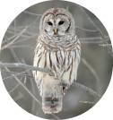

le Harfang des neiges
Saviez-vous que le Harfang des neiges est l'un des rares rapaces à chasser le jour ? Ce
majestueux oiseau blanc, souvent vu dans le nord du Québec, est parfaitement adapté aux hivers
rigoureux. Avec ses yeux jaunes brillants et son plumage qui se fond dans la neige, il est un expert
en chasse, se nourrissant principalement de lemmings. Ce prédateur silencieux peut voler sans faire de
bruit grâce à ses plumes spéciales